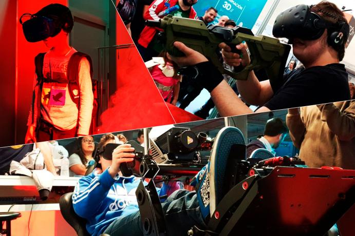
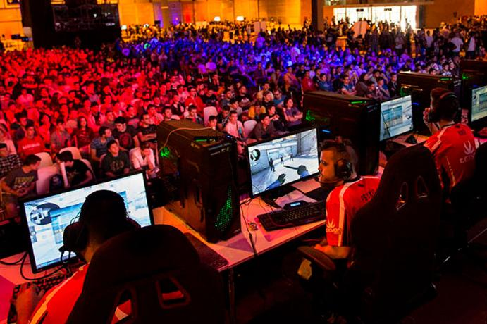
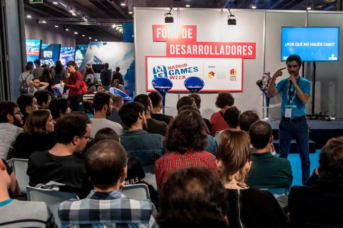
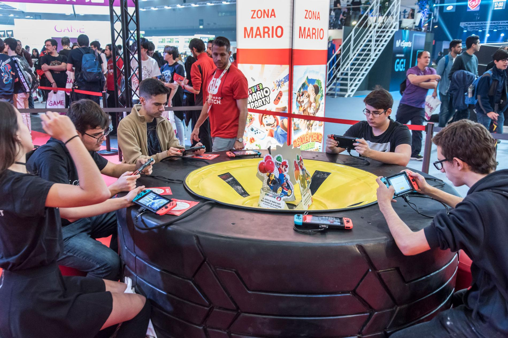

Distrito VR
Madrid Games Week de la mano con Jugón Virtual y Distrito VR
traen la Realidad Virtual al Pabellón 4 Este área de Realidad
Virtual contará en primicia con las últimas novedades del sector
de VR y AR, presentando algunas de las experiencias más
innovadoras y sorprendentes del panorama actual. Simuladores,
Nuevos lanzamientos, Zonas Arcade, etc.. todo un festival para
los amantes de estas nuevas tecnologías. Área Novedades
Zona las últimas novedades de la mano de desarrolladores de
Juegos y fabricantes de hardware de tecnologías inmersivas. Área
Arcade VR Zona donde se mostrarán experiencias virtuales más
ambiciosas y que requieran una gran superficie de juego. Área
Indie En colaboración con AEVI, los desarrollos independientes
de VR más interesantes del momento tendrán su espacio para
mostrar sus progresos. Lobby XR Un espacio de Networking
dedicado al mundo profesional donde se realizarán conferencias, y
nuestra Fiesta XR, privada solo para

E-Sports
La Liga de Videojuegos Profesional y ESL organizarán en Madrid
Games Week los mejores torneos como solo ellos saben hacerlo; Gran
final de TacticsGG TacticsGG es el primer torneo presencial de
Teamfight Tactics, el famoso modo de juego de League of Legends,
que arrancó con dos torneos online abiertos a todo el mundo en el
que se clasificaron 4 jugadores. En la final de Madrid Games Week
ya esperan 4 influencers, formando los ocho competidores que
pelearán por una bolsa de 2500€ en premios a lo largo de las
cinco rondas. Los 4 influencers serán BarbeQ, Evangelion, Manute
y AKA Wonder y los dos comentaristas que pondrán voz a esta final
serán Shiki y Jac0b0. La Copa de CS:GO Tras una intensa
fase online en la que han competido los mejores equipos de la
escena, Team Heretics y Movistar Riders se enfrentarán a un mejor
de 3 mapas para levantar el trofeo de campeón, una final deseada
por muchos en la previa y que, finalmente, se va a cumplir para
aupar al mejor equipo del panorama nacional.

Espacio Desarrollo
El área de desarrolladores es un espacio donde reunirse, mostrar
videojuegos y crear conexiones. Un lugar diseñado para que los
videojuegos independientes puedan ser mostrados al gran público
en un lugar céntrico. También dispondrá de una zona de
conferencias, que duplica su espacio respecto al año pasado y
amplía su oferta de charlas y añade talleres. MeetToMatch
es la forma más efectiva de hacer negocios en eventos. El
objetivo es conectar a posibles socios comerciales por elección y
no por casualidad. Guerrilla Developers DayUn encuentro
de desarrolladores de videojuegos en torno a un intenso programa
de conferencias donde los profesionales del sector compartirán
sus experiencias y know-how. El evento contará con una
representación destacada de IndieCade, el festival más importante
de videojuegos independientes a nivel internacional, en la que
PlayStation® Talents estará presente con puestos de los juegos de
varios de sus PlayStation®Camps y PlayStation®Alianzas.

Más actividades
La compañía ha desvelado las siguientes actividades que ofrecerá
a todos sus seguidores: Ariadna Castellanos y Dreams: La
pianista y compositora Ariadna Castellanos llevará a cabo dos
actuaciones especiales en directo combinando las posibilidades
del título Dreams y su inseparable piano. BEAT THE PRO
FIFA 20: Se disputará un torneo “beat the pro” que dará a los
asistentes a la feria la oportunidad de medirse, con los mejores
jugadores españoles de FIFA 20: Gravesen, JRA Lion y Andonii PM,
entre otros. Top Gamers Academy: El primer reality-talent
de videojuegos a nivel mundial, se presentará de mano de algunos
de sus protagonistas en la arena del stand de PlayStation®. El
programa estará producido por Gestmusic Endemol y Webedia y
contará con PlayStation® como aliado estratégico, así como con la
participación de Twitch, ATRESMEDIA y DeAplaneta. Los visitantes
podrán participar en el quizz de PlayStation®Now para demostrar
sus conocimientos sobre la plataforma y mucho más...